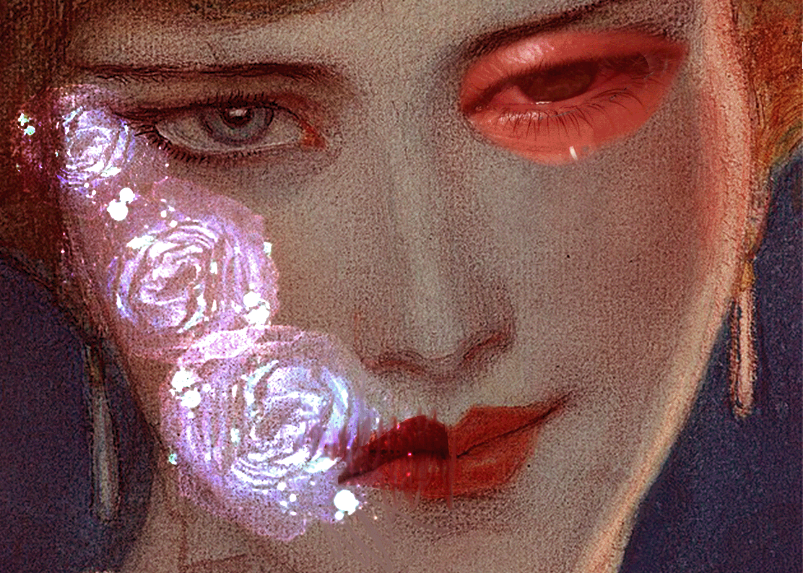

Blending Mode
In this first composition I worked with blending modes to fuse different images and create a face that reflects vulnerability. What I mean is to show the “who” under the face of a person. The bright and translucent flowers mix with the skin, I wanted to show them as emotional scars emerging from her face. I wanted to show how beauty and fragility can live together with pain, and how emotions are not always directly visible. People can look happy but inside is the contrary.The use of the blending mode allowed me to integrate these elements so they seem like an organic part of the portrait.
